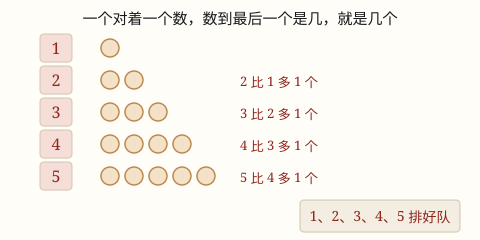

1~5 的认识与数的顺序
数东西要一个对着一个数：点一个，数一个。数到最后一个是几，这一堆就是几个。
| 所属主题 | 数的意义和性质 |
|---|---|
| 所属模块 | 数与代数 |
| 课标学段 | 第一学段（1~2年级） |
| 核心素养 | 数感符号意识 |
课标要求
| 数与代数·数与运算 | 在实际情境中感悟并理解万以内数的意义，理解数位的含义，知道用算盘可以表示多位数（例1）。 印刷第 18 页 行为动词：理解 |
|---|---|
| 数与代数·数与运算 | 了解符号＜，＝，＞的含义，会比较万以内数的大小；通过数的大小比较，感悟相等和不等关系（例2）。 印刷第 18 页 行为动词：了解 |
说明
1、2、3、4、5 是五个数。看到 3 个苹果、3 支铅笔、3 个小朋友，它们的个数都是 3，都可以用「3」来表示。
数数的时候，要一个对着一个：手指点一个，嘴里数一个。数到最后一个是几，这一堆就是几个。
数出来的顺序是 1、2、3、4、5。后面的数比前面的数多 1，前面的数比后面的数少 1。
个数和摆法没有关系。5 颗糖摆成一排、摆成一圈、堆成一堆，都还是 5 颗。
使用场景
分糖果：先把糖数清楚有几颗，再一颗一颗分给小朋友，才不会有人多有人少。
文具盒：数一数文具盒里有几支铅笔、几块橡皮，就知道够不够明天上课用。
操场排队：体育课上大家报数，报到几就知道自己站第几，队伍排得整整齐齐。
吃水果：盘子里的草莓吃掉几个以后，再数一数，就知道还剩几个。
整理书包：课本、作业本一本一本数过去，数到 5 就说明没落下东西。
注意点
要一个对着一个数。手指点一个，嘴里数一个；点过的别再点，没点到的别跳过去。
数到最后一个是几就是几个。不要数完又从头再数一遍，也不要把最后一个漏掉。
数过的挪到一边。把数过的糖果一颗一颗挪到桌子另一头，就不容易漏数、也不容易重复数。
顺序不能乱。1、2、3、4、5 一个接一个，2 后面是 3，不是 5；4 前面是 3，不是 1。
摆得乱也要一个一个数。东西堆在一起的时候，数一个拿走一个最保险。
为什么是这样

图 1：数到最后一个是几就是几个；后面的数总比前面的数多 1
算理推导
把 4 颗糖摆在桌上，用手指一颗一颗点着数：「1、2、3、4」。手指停在最后一颗上，嘴里说的是 4，所以一共是 4 颗。
为什么数到 4 就是 4 颗？因为每说一个数，手指就正好点在一颗糖上，数和糖是一对一的。最后说到几，就说明配过几回。
再添 1 颗变成 5 颗：5 排在 4 的后面，所以 5 颗比 4 颗多 1 颗。
把 5 颗糖拿走 1 颗，就回到 4 颗。顺着数会变多，倒着数会变少，这就是 1、2、3、4、5 的顺序。
看图 1：从 1 到 5 一行一行看，每一行都比上一行多出 1 个圆片，多出来的那 1 个，就是「下一个数」。
动手实验
抓一把花生（不超过 5 颗）放在桌上，数一数有几颗；再闭上眼睛，请爸爸妈妈添 1 颗或者拿走 1 颗，睁开眼重新数，看看变成几颗。然后把 5 颗糖摆成一排、摆成一个圆圈、堆成一堆，各数一遍，你会发现：摆法变了，个数还是 5。
按场景的例题
例 1（场景：校园生活） 操场上小朋友排队做游戏
小朋友们从前往后报数：1、2、3、4、5。小红报到 4。她前面有几个人？
解：顺着数，小红是第 4 个。第 4 个前面是第 1 个、第 2 个、第 3 个，一共 3 个人。
答：小红前面有 3 个人。
例 2（场景：上学日常） 文具盒里的铅笔和橡皮
文具盒里放了 3 支铅笔和 2 块橡皮。文具盒里一共有几件文具？
解：一件一件数：铅笔 1、2、3；橡皮接着数 4、5。数到最后一个是 5。
答：一共 5 件。
例 3（场景：饮食与配比） 盘子里的草莓
盘子里有 4 颗草莓，妈妈又洗了 1 颗放进去。现在盘子里有几颗草莓？
解：原来数到 4，再添 1 颗就顺着数到 5。4 的后面是 5。
答：5 颗草莓。
例 4（场景：家庭与年龄） 家里吃饭摆碗
家里有 5 个人吃饭，每人一个碗。妈妈只摆了 4 个碗，够吗？还差几个？
解：数人数：1、2、3、4、5，一共要 5 个碗。摆了 4 个，4 排在 5 前面，比 5 少 1。
答：不够，还差 1 个碗。
常用推论
顺着数一个多 1，倒着数一个少 1：2 添上 1 是 3，3 去掉 1 是 2。
几个和第几个不一样：「5 个」说的是一共多少，「第 5 个」说的是排在哪个位置。
要知道谁多谁少，就一个对着一个比；对不上的那一堆就多。
1、2、3、4、5 里，越靠后的数越大，越靠前的数越小。
易错点
错数 5 颗糖时嘴里念「1、2、3、4」，答 4 颗（最后一颗没点到）。
为什么错手点得慢、嘴数得快，最后一颗糖还没点到就停了。漏数是数数最常见的错。
正确点一个、数一个，数完再看一遍：嘴里最后说的是 5，就是 5 颗。
错同一颗糖手指点了两次，数出 6 颗。
为什么错点数的时候手指来回晃，一颗糖被数了两次，这叫重复数。
正确数一个就把它挪到一边，挪走的不再数，桌上的数完就正好是 5 颗。
错把 3 支铅笔和 2 块橡皮数成 4 件。
为什么错数到铅笔的 3 以后，橡皮从 3 又开始数（3、4），把起点又数了一遍。
正确接着数：铅笔 1、2、3，橡皮接着数 4、5，一共 5 件。
错糖果堆成一堆时随口说「大概 5 颗」。
为什么错没一个对着一个点，只是看一眼猜个数，猜的和实际常常不一样。
正确摆开来一颗一颗数，或者数一个拿走一个，才能真正数准。
直观理解
把数数想成给每个小朋友发一颗糖：你手里有一颗糖，就有一个小朋友拿到糖；糖发完了，有几个小朋友举手，就有几颗糖。你的手指就是那颗糖——点一下，才算一个。想伸出几根手指，就表示几个：竖起 3 根手指就是 3，再竖起 1 根就是 4。
点一个，数一个，手指不跳也不重；数到几，就是几，一堆东西数得清。